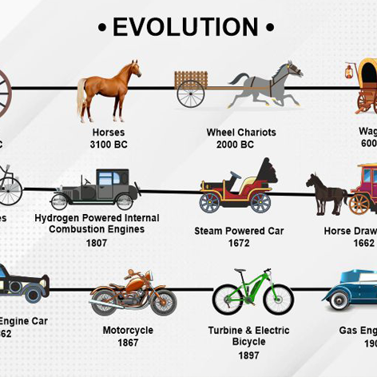

Essential B2-level professional and technical vocabulary covering historical mobility transitions, multi-modal corridors, rail electrification, life-cycle emissions, and cause-effect grammar structures.

The deliberate transition of travelers or freight from carbon-intensive modes (cars, planes) to sustainable alternatives (rail, cycling).
Electrified passenger trains operating over 250 km/h, providing a low-carbon competitor to domestic and short-haul flights.
The total greenhouse gas emissions generated throughout vehicle and infrastructure manufacturing, operation, maintenance, and disposal.
Fair distribution of transit infrastructure ensuring remote or rural populations maintain equitable mobility and economic access.
The total surface area of natural or agricultural land consumed and artificialized to construct highways, tracks, or runways.
The systematic technological and behavioral elimination of fossil carbon from transport propulsion and logistics systems.
A seamless travel chain combining multiple transport modes (e.g., train, tram, and electric bike) with synchronized ticketing.
Upgrading diesel rail networks with overhead catenary wires or battery storage, drastically reducing direct line emissions.
Commercial air travel over distances under 600 km, exhibiting high carbon intensity due to take-off and landing fuel burn.
Human-powered transport forms (walking, cycling, micro-mobility) supporting zero emissions and public health in urban areas.
Systematic phase-out of older high-emission aircraft and rolling stock in favor of aerodynamically optimized, fuel-efficient models.
The maximum passenger throughput and freight volume a given arterial transport link can safely handle without congestion.
Drop-in jet kerosene alternatives synthesized from circular biomass, waste cooking oils, or captured CO2, cutting net emissions up to 80%.
The statistical percentage share of commuter trips divided across competing transit modes within a region or city.
A targeted road pricing mechanism levied on private automobiles in central districts to curb traffic jams and fund public transit.
Transport solutions (shuttles, e-scooters, feeder buses) bridging the gap between major railway terminals and a traveler's doorstep.
Urban planning concentrating residential density, commercial offices, and civic amenities within walking radius of transit hubs.
Propulsion technology (battery-electric or hydrogen fuel cell) emitting zero exhaust pollutants during active operation.
The ratio of useful travel work delivered (passenger-kilometers) per unit of energy consumed across transport modes.
Engine design, sound barriers, and operational flight procedures applied to protect communities adjacent to transit corridors.
Digital consumer platforms unifying journey planning, booking, and contactless payment across various public and private transit operators.
Transferring heavy logistics containers from long-distance highway trucking to electrified freight trains or inland waterways.
The ecological and physical alteration resulting from laying railway ballast, pouring airport concrete, and erecting highway viaducts.
Enforceable governmental directives and carbon trading systems (EU ETS, CORSIA) establishing emissions limits on commercial carriers.
A core performance indicator tracking scheduled vs. actual arrival times, determining public trust in rail vs. air reliability.
Statutory Environmental Impact Assessments (EIAs) conducted prior to funding or breaking ground on major corridor expansions.
Low-density peri-urban expansion that increases commuter trip lengths and forces heavy reliance on personal passenger cars.
Fiscal investment from public budgets to lower farebox costs, incentivizing high ridership and equitable civic mobility.
Digital train control systems (ERTMS/ETCS) enabling higher train frequency, reduced headways, and safer corridor operations.
Financial contributions compensating for unavoidable transport emissions by funding certified external renewable energy projects.
Professional B2 transport reports require precise cause-and-effect connectors and double comparative structures to evaluate infrastructure trade-offs: